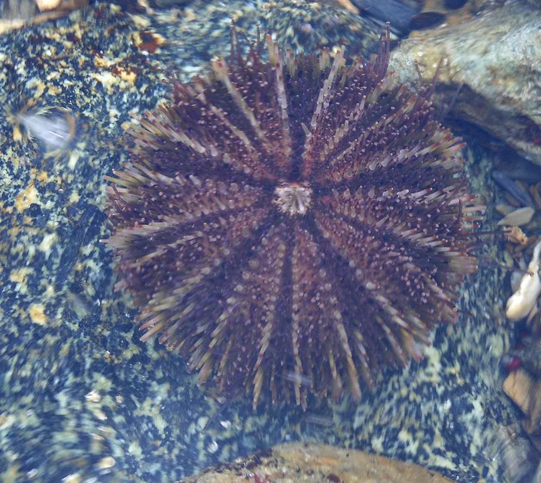

其他无脊椎动物 · 动物界
虾夷马粪海胆 Strongylocentrotus intermedius

壳径五至八厘米、棘短而密的球海胆，体色绿褐或红褐，啃食海带与裙带菜，是北方重要的养殖海胆。
- 分类
- 门棘皮动物门纲海胆纲目拱齿目科球海胆科属球海胆属
- 栖息环境
- 潮间带下区至水深三十米的岩礁与砾石底，海带成片处
- 地理分布
- 日本北海道、俄罗斯远东和朝鲜半岛北部冷水海域，中国北方引种养殖
- 保护级别
- 尚无保护级别；为重要养殖经济物种
物种志
虾夷马粪海胆的壳径五至八厘米，壳呈半球形，稍扁。它的棘短而密集，长度约一厘米，颜色有绿褐、红褐、紫褐等，棘的基部有深色的环纹，整体看上去像一颗带刺的栗子。壳面有十条步带和十条间步带，管足从壳孔中伸出，末端有吸盘，用来爬行和吸附。口位于腹面中央，由五个颚骨组成，构成亚里士多德提灯式的咀嚼器。
它分布于日本北海道、俄罗斯远东和朝鲜半岛北部的冷水海域，中国北方已引种养殖，栖息在潮间带下区至水深三十米的岩礁和砾石底，喜欢海带、裙带菜成片的海区。它以大型褐藻为食，用咀嚼器刮食藻体，食量大时能把一片海藻床啃成光秃的礁面，因此养殖上需控制密度。它雌雄异体，繁殖期在春夏，幼虫浮游后附着变态。它的生殖腺（海胆黄）是名贵食材，中国和日本都有大规模养殖，目前尚无保护级别。它的棘刺能扎伤皮肤，伤口易感染，赶海或分拣时应戴厚手套。
形态与习性
- 壳径五至八厘米，半球形稍扁
- 棘短而密集，长约一厘米，基部有深色环纹
- 体色绿褐、红褐或紫褐
- 栖息水层潮间带下区至水深三十米的岩礁
- 食性以海带、裙带菜等大型褐藻为食
- 防护棘刺可扎伤皮肤且易感染，需戴厚手套
趣味知识
- 它嘴里的咀嚼器由五块颚骨组成，能把海带刮得干干净净。
- 它把一片海藻床啃光后，礁面上只剩白花花的石头。
- 海胆黄是它的生殖腺，一只好海胆能卖出很高的价钱。